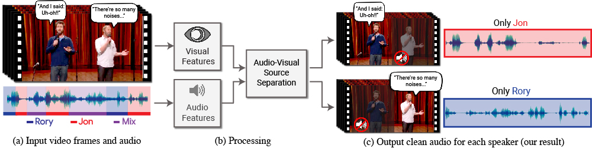
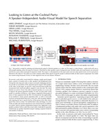
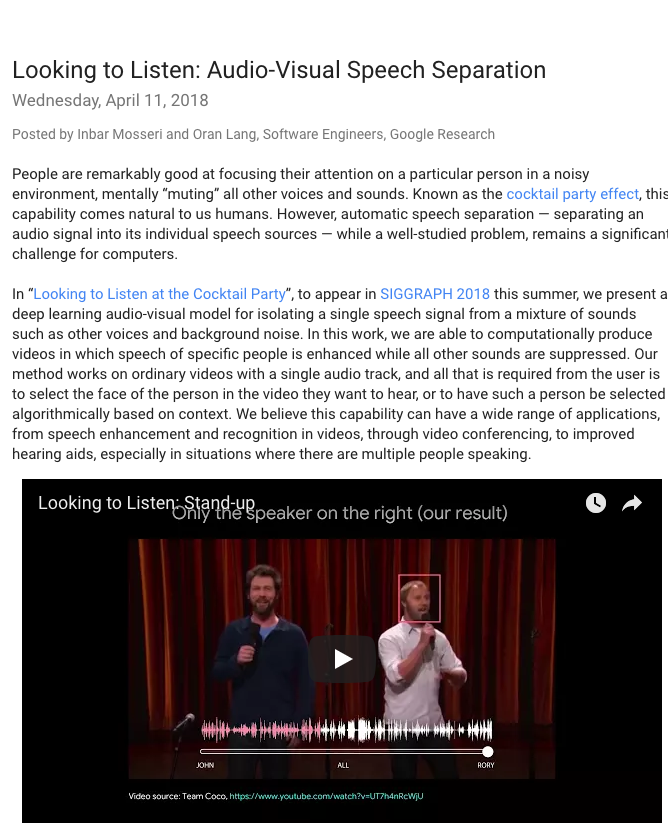
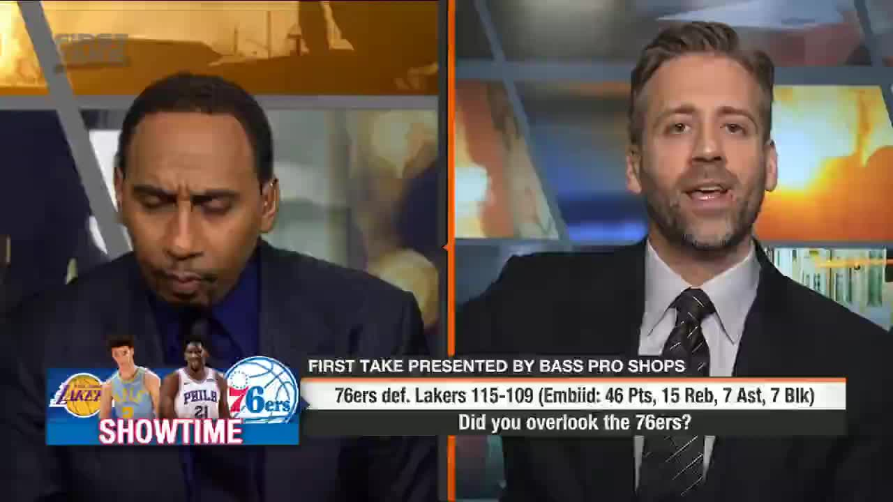

Looking to Listen at the Cocktail Party:
A Speaker-Independent Audio-Visual Model for Speech Separation
| Ariel Ephrat | Inbar Mosseri | Oran Lang | Tali Dekel | Kevin Wilson | Avinatan Hassidim | William T. Freeman | Michael Rubinstein |
| Google Research |
|  |
We present a model for isolating and enhancing the speech of desired speakers in a video. (a) The input is a video (frames + audio track) with one or more people speaking, where the speech of interest is interfered by other speakers and/or background noise. (b) Both audio and visual features are extracted and fed into a joint audio-visual speech separation model. The output is a decomposition of the input audio track into clean speech tracks, one for each person detected in the video (c). This allows us to then compose videos where speech of specific people is enhanced while all other sound is suppressed. Our model was trained using thousands of hours of video segments from our new dataset, AVSpeech, which we plan to release publicly. |
Our AVSpeech dataset is now available! |
Abstract
We present a joint audio-visual model for isolating a single speech signal from a mixture of sounds such as other speakers and background noise. Solving this task using only audio as input is extremely challenging and does not provide an association of the separated speech signals with speakers in the video. In this paper, we present a deep network-based model that incorporates both visual and auditory signals to solve this task. The visual features are used to "focus" the audio on desired speakers in a scene and to improve the speech separation quality. To train our joint audio-visual model, we introduce AVSpeech, a new dataset comprised of thousands of hours of video segments from the Web. We demonstrate the applicability of our method to classic speech separation tasks, as well as real-world scenarios involving heated interviews, noisy bars, and screaming children, only requiring the user to specify the face of the person in the video whose speech they want to isolate. Our method shows clear advantage over state-of-the-art audio-only speech separation in cases of mixed speech. In addition, our model, which is speaker-independent (trained once, applicable to any speaker), produces better results than recent audio-visual speech separation methods that are speaker-dependent (require training a separate model for each speaker of interest).
Paper
|  | "Looking to Listen at the Cocktail Party: A Speaker-Independent Audio-Visual Model for Speech Separation", [PDF] |
Google Research Blog
|  |
Supplementary Material
|  | [Link] |
Last updated: Aug 2018